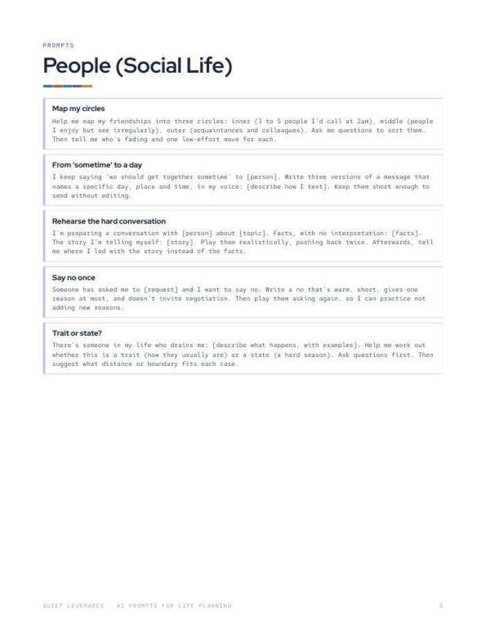
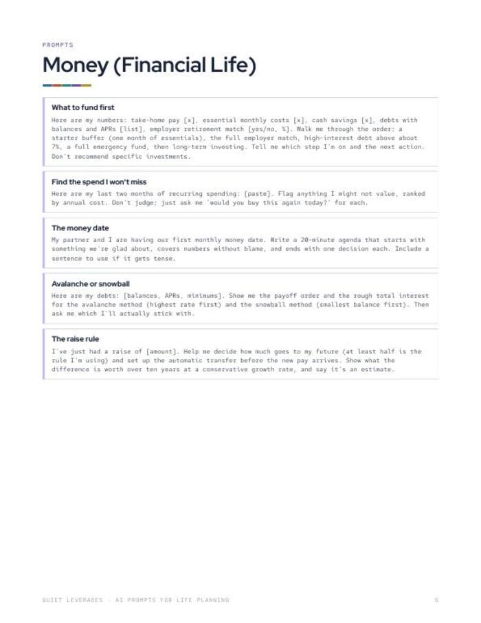

Ask an AI to plan your year and it mostly tells you the plan sounds great.
Thirty copy-and-paste prompts for ChatGPT, Claude or Gemini that separate facts from feelings and push back when a plan is too big.
Instant download. Print it or use it on a tablet with any PDF app. Prints fine on A4 at 'fit to page'.

Thirty prompts, seven sections
Start the year, design the quarter, every Sunday, people, money, work, and Day 90.
Facts before feelings
Prompts are written to separate what happened from what you think it means.
Built to push back
Each one asks the AI to question your plan, so you get a planning partner, not a cheerleader.
prompts
sections
AI tools it works with
What you leave with
A year-end review that asks questions
The AI interviews you one question at a time instead of summarising what you already said.
A quarter you can test
Turn a wish into a ninety-day test with one measure, then find the hidden cost.
A Sunday review in a few replies
A set of prompts for the weekly check, so the plan gets read, not filed.
Prompts for people, money and work
The same method applied to the areas where plans usually go quiet.
Paste, fill the brackets, send
Each prompt is ready to copy. Remove names and anything private before you paste.
- Seven sections. Start the year, design the quarter, every Sunday, people, money, work, Day 90.
- Thirty prompts. Copy, fill the brackets, send.
- Works with ChatGPT, Claude and Gemini.
- Written to push back. Facts separated from feelings.


Three moves per prompt
Paste the prompt
Fill in the brackets with your own details.
Remove anything private
Take out names and anything you would not paste into a chat.
Ask it to push back
If a reply feels too agreeable, say so and ask again.
A good fit if you plan with an AI already
Use this if
- You use ChatGPT, Claude or Gemini and want sharper questions.
- You want a year-end review, a quarter plan and a Sunday check in one place.
- You like to see the facts before the story.
Skip it if
- You want an AI to decide for you. These prompts ask it to question you.
- You want a full planner system. See The Quiet Reset 2027.
- You want financial, legal or medical advice. These are planning prompts.
Why we built it
What readers say about AI Prompts for Life Planning
Get thirty prompts for the year
A PDF you can print or keep open beside your chat window.
- 30 copy-and-paste prompts
- Seven sections from Start the year to Day 90
- Works with ChatGPT, Claude and Gemini
Before you decide
Which AI tools does it work with?
ChatGPT, Claude and Gemini. The prompts are plain text, so you paste them into whichever you use.
What format is it?
A printable PDF, US Letter. It prints fine on A4 at 'fit to page', and you can copy the prompts straight from a tablet or computer.
Do I need a paid AI account?
We do not require one. The prompts are plain text and go into any assistant that accepts them.
Is it safe to paste my details?
Take out names and anything private before you paste. The guide says so on page 1.
Is it advice?
No. These are planning prompts. Not financial, legal or medical advice, and an AI reply is not either.
The next step after this one

Make the AI ask better questions.
Thirty prompts, from the year-end review to Day 90.
Get the prompts for $9One-time $9 on Gumroad. Instant download.